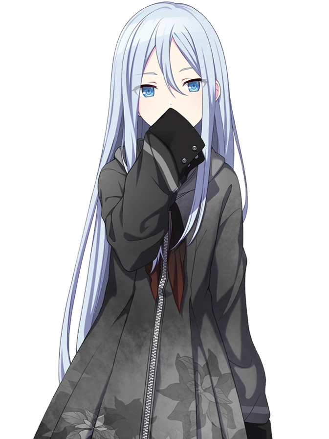

"25-ji, Nightcord de.", often abbreviated as 25-ji, N25, and Niigo (ニーゴ), is an online music circle that makes songs at 25:00 (1:00 AM),
present in the mobile rhythm videogame "Hatsune Miku: Colorful Stage" (a.k.a. Project Sekai).
The circle was created by Kanade (K) in hopes of making music that "saves people" and gives them hope.
She recruits the members Ena (Enanan), Mizuki (Amia), and Mafuyu (Yuki), communicating through a chat tool called "Nightcord."
One day, Kanade loses contact with one of her circle members. They find a song file named "Untitled" that is shared with each of them,
and upon playing it, they are transported to the Empty SEKAI, a special place created from the members' feelings. This is also where they
meet in person for the first time.
The music from Nightcord at 25:00 is generally melancholic and very intense, using dark lyrics not only to make people feel heard, but to also give
hope and "save" them. Some of the most popular covers from Nightcord at 25:00 are Bug, BAKENOHANA, Gehenna,
Heat Abnormal, Hated by life, and Bitter Choco Decoration.
Yoisaki Kanade (宵崎 奏) is a third-year student taking online classes.
She is the leader and composer, going by the alias "K".
Though soft-spoken and introverted, she leads the group with kindness and unmatched dedication, often staying up late as a result.
Kanade's favorite food is instant noodles cups, because they are easy to make and she lives a low energy life, though Honami
helps her by preparing more nutritious food.
Must compose... - Kanade

Asahina Mafuyu
Asahina Mafuyu (朝比奈 まふゆ) is a third-year student at Miyamasuzaka Girls Academy.
She is the lyricist, going by the alias "Yuki" (雪, snow).
Mafuyu was an ideal honor student, and was often seen as a "perfect" person with no flaws, until Mafuyu began losing her sense of self.
This spawned the Empty SEKAI and its Hatsune Miku, whom Mafuyu developed a strong bond with.
During the search for her true self, she came into contact with Yoisaki Kanade, and later formed Nightcord at 25:00 along with Shinonome Ena and Akiyama Mizuki.
In her second year, Mafuyu was in Class 2-B. In her third year, she moved into Class 3-B.
Mafuyu is a member of the archery club at Miyamasuzaka, and serves as a class representative.
Shinonome Ena (東雲 絵名) is a third-year student at Kamiyama High School who attends night classes.
She is the illustrator, going by the alias "Enanan."
Despite wrestling with her belief that she has no artistic talent and being at the receiving end of harsh criticism,
Ena persists in creating art. She has a straightforward personality and was initially frustrated with Mafuyu.
However, noticing the changes in Mafuyu since they first met, Ena has resolved to look after her dear friend.
All I want is just to keep improving. - Ena
Akiyama Mizuki
Akiyama Mizuki (暁山 瑞希) is a second year student at Kamiyama High School.
They are the animator, going by the alias "Amia".
They were captivated by Kanade's music upon listening to it, and made a music video for the song. Kanade invited Mizuki to Nightcord at 25:00 after seeing this video.
Mizuki has been treated as an outcast for their cute fashion style and honest personality since elementary school.
Her sister Yuuki encouraged Mizuki to follow their heart and enjoy what they love, but acknowledged that the criticism they may continuously receive for it will be painful.
I'm still me, but is that ok? - Mizuki
Hatsune Miku
Hatsune Miku (初音ミク) is a Vocaloid software voicebank developed by Crypton Future Media. She is a "virtual singer", meaning she has a synthetic voice that can be
used through the Vocaloid software to sing and bring life to music by people all over the world and the reach the hearts of millions of people.
Normally, she has a colorful light blue appearance, but her appearance changes based on the SEKAI she appears in; in NC25's Empty SEKAI,
she brings a more pale appearance and faint personality, reflecting the more turbulent emotions of the group members. Other virtual singers also make an appearance
in NC25's songs and SEKAI, being Luka, Rin, Len, MEIKO and KAITO.
Live, live, live, live, just live! - Miku (in "Life hates us now" by Iori Kanzaki, 2017)